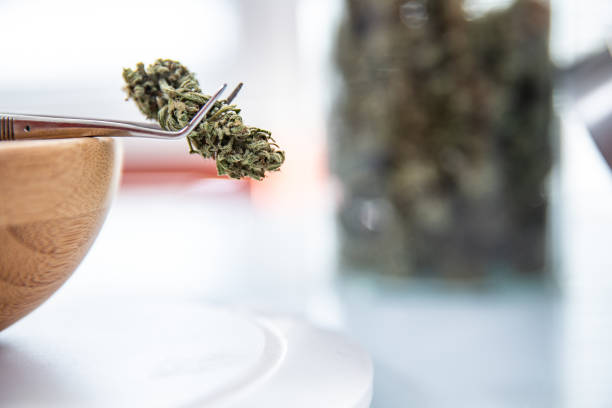

How to Measure the Success of your Dispensary's Social Media Marketing Campaigns
Posted by on 2024-06-10
Social media has become an essential tool for businesses to connect with their audience and promote their products or services. For dispensaries, social media marketing campaigns can be a powerful way to reach potential customers and build brand awareness. However, measuring the success of these campaigns is crucial in order to determine their effectiveness and make necessary adjustments.
One of the key metrics used to measure the success of a dispensary's social media marketing campaigns is engagement. This includes likes, comments, shares, and clicks on posts. High levels of engagement indicate that your content is resonating with your audience and generating interest in your products or services. Monitoring these metrics over time can help you identify what types of content are most effective in engaging your audience.
Another important metric to consider is reach, which measures how many people are seeing your social media posts. A high reach indicates that your content is reaching a large number of people, increasing brand visibility and potentially driving more traffic to your dispensary. Tracking reach can help you understand the impact of your social media efforts and make informed decisions about future campaigns.
Conversion rate is another key metric for measuring the success of social media marketing campaigns. This measures how many people who see your posts actually take action, such as visiting your website or making a purchase. By tracking conversion rates, you can assess the effectiveness of your calls-to-action and optimize them for better results.
In addition to these metrics, it's important to consider overall brand sentiment when evaluating the success of your social media marketing campaigns. Monitoring customer feedback and reviews can provide valuable insights into how your dispensary is perceived by its audience. Positive sentiment indicates that your campaigns are resonating with customers and building trust in your brand.
Ultimately, measuring the success of your dispensary's social media marketing campaigns requires a combination of quantitative data analysis and qualitative feedback from customers. By tracking engagement, reach, conversion rates, and brand sentiment, you can gain a comprehensive understanding of how well your campaigns are performing and make strategic decisions to improve results over time.